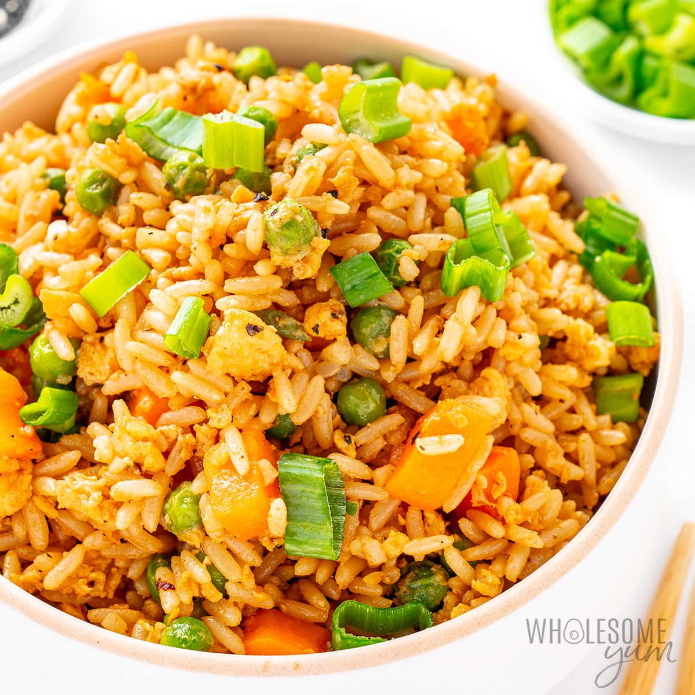

Fried Rice

DESCRIPTION:
Nigerian fried rice is colorful and packed with vegetables, giving it a fresh taste and light texture.
- 2 cups rice
- 1 cup mixed vegetables (carrots, peas, sweet corn)
- 1/2 cup liver or chicken (optional)
- 1 onion
- 3 tbsp vegetable oil
- 2 cups chicken stock
- 1 tsp curry powder
- 2 seasoning cubes
- Salt to taste
STEPS:
- Cook rice in seasoned stock (not too soft).
- Heat oil and sauté onions.
- Add liver or chicken and fry briefly.
- Add vegetables and stir.
- Add cooked rice and mix well.
- Season with curry, cubes, and salt.
- Stir-fry for 5–7 minutes.
- Serve warm.